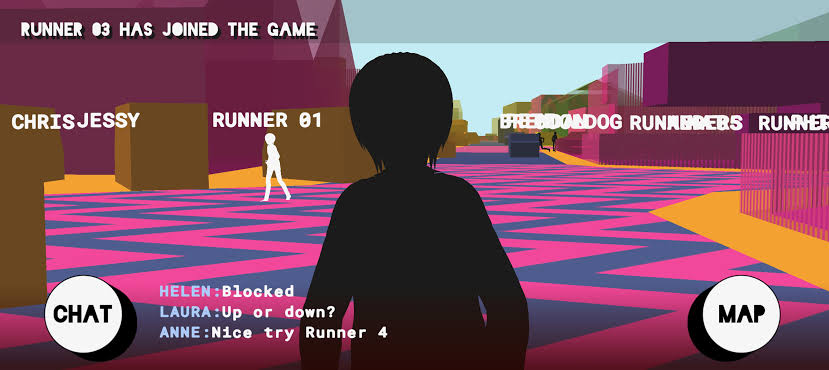

Journal 3
Blast Theory’s Can You See Me Now? and the distance between two cities

A game of chase
Reflecting back on the reading "can you see me now", a project by Blast Theory developed with the Mixed Reality Lab at the University of Nottingham. It premiered in Sheffield in 2001 and is often described as one of the first location-based games. The premise is quite simple. Online players move through a virtual map of a city centre using their arrow keys, while Blast Theory's runners move through the actual streets, tracked by GPS. If a runner gets close enough to a player's position, that player is seen; and out of the game. On paper it sounds very much like tag. In practice, it seems to become something more nuanced.
Hearing the street
The detail that stayed with me was the audio. The runners talk to each other over walkie-talkies, and that channel is streamed straight into the game for online players to hear. So while the players see a clean, simplified map, they also hear the runners out of breath, unsure of where they are, dealing with traffic that never appears in the virtual version. That gap feels like the centre of the work. One side is weightless and safe; the other is cold, tired and physical. I found myself thinking about who carries the real effort in that exchange, and how easy it is to forget that while sitting behind a screen.
The empty spot on the pavement becomes a kind of record of someone who was never really there.
Someone you haven’t seen
Before playing, each participant is asked whether there is someone they haven’t seen in a long time but still think of. That name is only spoken when they are caught, read out by a runner on the street. The runner then photographs the empty spot where the player was caught. I find that quietly moving. The empty spot on the pavement becomes a kind of record of someone who was never really there. It turns a chase game into something about absence and memory, and it suggests that even a distant, digital connection can carry some tenderness.
Then and now
Reading about it now, more than twenty years later, a lot of what Blast Theory were anticipating has become ordinary. Location tracking runs in the background of most of our phones, and private conversations regularly spill into public space. What felt experimental in 2001 is now part of daily life, which makes the work feel less like a prediction and more like a question we stopped asking. It also connects to what I have been thinking about in the last two entries: the systems behind what we see, and how working with code and hardware makes those systems a little more visible. Can You See Me Now? does something similar by putting the real city and the virtual one side by side and letting you notice where they don’t match.